Toolbar / Icon:
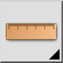
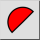
Author: Robert S.
This command calculates the area of arcs, circles, ellipses and elliptical arcs, and optionally adds the information to the current layer of a drawing. If you select any other type of entity a warning is shown in the command line.
For arcs, there are two options for calculating areas, namely Segment or Sector. The area of a segment (or slice) is the area bound by the arc and two lines drawn from the arc's startpoint and endpoint to the arc's centre. The area of a sector is the area bound by the arc and a chord drawn from the arc's startpoint to the endpoint.
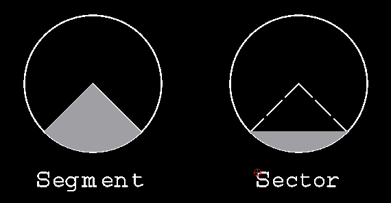
Options
This command has the standard "Add measurement to drawing" and "Text Height" options.
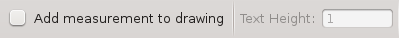
Whether this is off or not, when you click on an arc, circle, ellipse or elliptical arc, the information is displayed in the command line widget.
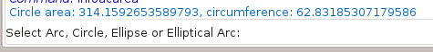
(Note: Every time you start an info command the "Add measurement to drawing" checkbox is always unchecked. You must remember to switch it on if you want the info added to the drawing).
It also adds the following options.
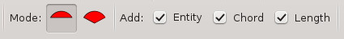
Mode:
The mode only applies to arcs.
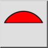
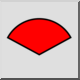
Add:
Entity: This selects whether you want to add a copy of the measured entity to the current layer of the drawing.
Chord: This selects if you want the chord (sector), or radius lines (segment), added to the drawing.
Length: By default the area is always printed on the drawing. This option selects whether you want extra information added to the drawing.
For circles and full ellipses the extra information is the circumference. This uses the centre point as the lower left corner for the added text.
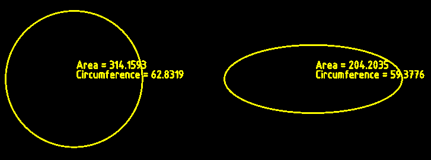
For circular arcs the extra information is the length of the arc and the length of the chord (in sector mode), or the radius (in segment mode).
For ellipses the extra information is the length of the arc and the length of the chord (in sector mode), or the distance from the centre point to the startpoint of the arc, followed by the distance from the centre point to the endpoint of the arc (in segment mode).
The lower left corner for the added text is the endpoint of the arc.
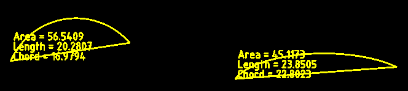
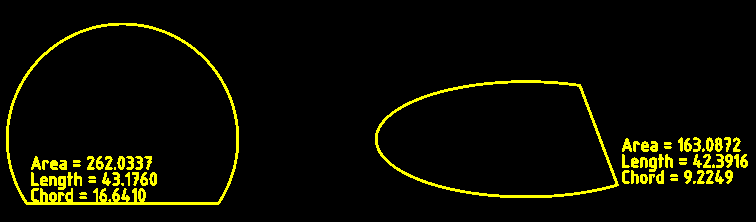
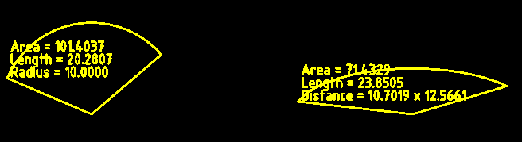
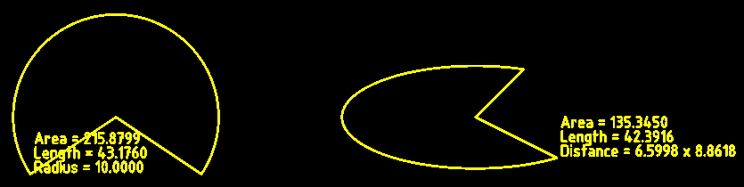